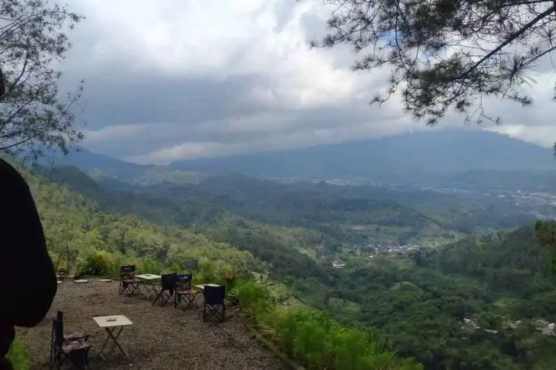

Wahana Malang Skyland yang paling populer adalah Sky Bridge sepanjang sekitar 160 meter dan Sky Glass berbahan kaca tempered laminated, keduanya menawarkan pengalaman berdiri di ketinggian dengan panorama Kota Malang dan Batu.
Ringkasan Inti
- Sky Bridge merupakan jembatan ketinggian sepanjang sekitar 160 meter pada ketinggian sekitar 12 meter.
- Sky Glass menggunakan kaca tempered laminated setebal sekitar 24 milimeter untuk menjaga keamanan pengunjung.
- Panorama Gunung Arjuno, Gunung Panderman, dan Gunung Ukir menjadi latar utama wahana ini.
- Malang Skyland juga menyediakan area live music, kursi santai, dan tenant kuliner.
- Kombinasi wahana teknologi dan pemandangan alam menjadi daya tarik khas destinasi ini.
1. Apa Saja Wahana Utama yang Tersedia di Malang Skyland?
Wahana utama yang tersedia di Malang Skyland adalah Sky Bridge dan Sky Glass, dua ikon yang menjadi daya tarik paling banyak dibagikan wisatawan di media sosial karena menawarkan sensasi berdiri di ketinggian dengan pemandangan langsung ke arah Kota Malang dan Kota Batu.
Selain kedua wahana tersebut, Malang Skyland juga dilengkapi berbagai spot foto bergaya modern dan futuristik yang dirancang menyatu dengan panorama perbukitan di sekitarnya, sehingga pengunjung memiliki banyak pilihan lokasi untuk berfoto selama berkunjung.
2. Bagaimana Pengalaman Menikmati Sky Bridge di Malang Skyland?
Pengalaman menikmati Sky Bridge di Malang Skyland memberikan sensasi berjalan di atas jembatan sepanjang sekitar 160 meter yang berada pada ketinggian sekitar 12 meter, memungkinkan pengunjung melihat panorama sekitar tanpa halangan pandangan.
Sebagian titik pada Sky Bridge dilengkapi lantai kaca sehingga pengunjung dapat melihat langsung ke bagian bawah jembatan, memberikan pengalaman visual yang berbeda dibanding berjalan di jembatan pada umumnya. Pengalaman ini menjadi salah satu alasan utama wisatawan menjadikan Sky Bridge sebagai spot wajib saat berkunjung.
Baca Juga
3. Bagaimana Pengalaman Menikmati Sky Glass di Malang Skyland?
Pengalaman menikmati Sky Glass di Malang Skyland memberikan sensasi berdiri di atas permukaan kaca transparan yang dirancang menggunakan bahan tempered laminated setebal sekitar 24 milimeter untuk menjaga keamanan pengunjung selama beraktivitas di wahana tersebut.
Pengelola Malang Skyland umumnya menyediakan alas kaki khusus bagi pengunjung yang membeli tiket wahana Sky Glass, serta memastikan area tersebut telah melalui pengujian kelayakan dan diawasi petugas selama jam operasional berlangsung.
4. Apa Daya Tarik Lain di Malang Skyland Selain Wahana Utamanya?
Daya tarik lain di Malang Skyland selain wahana utamanya meliputi panorama pegunungan seperti Gunung Arjuno, Gunung Panderman, dan Gunung Ukir, serta suasana city light dari Kota Malang dan Kota Batu yang dapat dinikmati saat malam hari.
Selain panorama alam, Malang Skyland juga menghadirkan hiburan live music setiap hari, area duduk santai berupa kursi dan bean bag, tenant kuliner khas Jawa Timur, serta layanan kereta shuttle gratis yang mengantarkan pengunjung dari area parkir menuju lobby utama.
5. Kapan Waktu Terbaik Menikmati Wahana di Malang Skyland?
Waktu terbaik menikmati wahana di Malang Skyland umumnya berada pada sore hari setelah pukul 15.00 WIB untuk menyaksikan matahari terbenam, atau malam hari mulai pukul 18.00 hingga 21.00 WIB untuk menikmati pemandangan city light dari Sky Bridge.
Pengunjung yang datang pada siang hari tetap dapat menikmati panorama pegunungan dengan langit yang cerah, namun suasana golden hour saat sore dan gemerlap lampu kota saat malam sering dianggap memberikan pengalaman visual yang lebih berkesan.
6. Pertanyaan yang Sering Diajukan
Wahana Malang Skyland seperti Sky Bridge dan Sky Glass menjadi daya tarik utama yang membedakan destinasi ini dari wisata ketinggian lain di sekitar Batu, didukung panorama pegunungan dan fasilitas hiburan tambahan seperti live music dan tenant kuliner. Memilih waktu kunjungan yang tepat, terutama sore hingga malam hari, akan membuat pengalaman menikmati wahana ini semakin optimal.
Abiyyu
Seorang penulis artikel yang sudah berpengalaman di dalam dunia wisata outbound Batu Malang.